Układ odniesienia
Opisując ruch jakiś ciał możemy to zrobić jedynie w odniesieniu do innych ciał. Kiedy mówimy, że jakiś obiekt znajduje się w jadącym pociągu, to łatwo zauważyć, że porusza się on względem torów, ale pozostaje w spoczynku względem ścian wagonu. Zawsze więc ruch opisujemy względem układu odniesienia. A układ odniesienia możemy "związać" z dowolnym ciałem. Dla uproszczenia obliczeń układ odniesienia przedstawia się za pomocą kartezjańskiego układu współrzędnych. Wygodnie jest wówczas ustalić początek układu współrzędnych w miejscu obiektu względem którego opisujemy ruch. Wówczas jeżeli punkt O oznacza początek układu współrzędnych, punkt P1 jest punktem początkowego położenia ciała, punkt P2 jest punktem końcowego położenia ciała to:
- Wektor 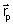 (o początku w punkcie O i końcu w punkcie P1) nazywany jest wektorem położenia początkowego
- Wektor 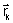 (o początku w punkcie O i końcu w punkcie P2) nazywamy wektorem położenia końcowego
- Wektor 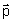 (o początku w punkcie P1 i końcu w punkcie P2) nazywamy wektorem przesunięcia (przemieszczenia). Jest to różnica wektora położenia końcowego i początkowego 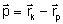
Punkt materialny
W celu uproszczenia zapisów lub dla ułatwienia zrozumienia danego problemu stosuje się czasami abstrakcyjne modele. Takim modelem jest punkt materialny. A nazywamy nim ciało posiadające masę, którego rozmiary można pominąć w rozważanym zagadnieniu, bez szkody dla tych rozważań.
Tor ruchu
Torem (trajektorią) nazywamy krzywą lub prostą zakreśloną w przestrzeni przez poruszający się punkt. Długość toru nazywamy drogą (s). Jeżeli tor jest linią prostą to mówimy, że ciało porusza się ruchem prostoliniowym. Jeżeli tor jest krzywą to ciało porusza się ruchem krzywoliniowym. Nie powinniśmy mylić toru ze śladem. Tor jest pojęciem abstrakcyjnym, nie można go zobaczyć, jest nieskończenie cienki.
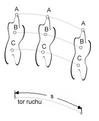
Prędkość
Bardzo ważnym pojęciem stosowanym w mechanice jest prędkość (szybkość). Szybkością (wielkość skalarna) nazywamy stosunek przebytej drogi do czasu. Prędkością średnią (wielkość wektorowa) nazywamy stosunek przemieszczenia do czasu:
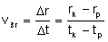
Kiedy różnica przyrostu czasu staje się bardzo mała, możemy mówić o prędkości chwilowej. Wówczas prędkość chwilową definiujemy jako granicę, do której zmierza ten stosunek przy nieskończenie krótkich odstępach czasu:
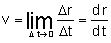
Prędkość jest więc pierwszą pochodną wektora położenia względem czasu.
Wektor prędkości jest zawsze styczny do toru.
Przyspieszenie
Postępując analogicznie jak poprzednio przyspieszenie definiujemy jako stosunek przyrostu prędkości względem czasu:
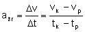 (czasami używa się też zapisu v0 i t0 dla jako prędkości i czasu początkowego)
Natomiast przyspieszenie chwilowe jest pochodną funkcji prędkości względem czasu, a więc drugą pochodną wektora położenia względem czasu:
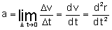
Podział ruchu
Ze względu na prędkość ruch możemy podzielić następująco:
- jednostajny
-
zmienny
- jednostajnie
- niejednostajnie
- prostoliniowy (ciało porusza się po prostej)
- krzywoliniowy (ciało porusza się po krzywej np. po okręgu)
Ruch jednostajny prostoliniowy
To taki ruch którego torem jest linia prosta a prędkość nie ulega zmianie, jest stała. Oznacza to, że ciało w jednakowych odstępach czasu przebywa jednakowe odcinki drogi.
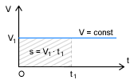
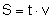 - miarą drogi na wykresie prędkości od czasu jest pole figury pod wykresem (dla każdego ruchu, nie tylko dla jednostajnego prostoliniowego).
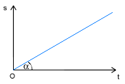
α - kąt nachylenia wykresu do osi czasu
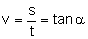 - miarą prędkości na wykresie drogi jest tangens kąta nachylenia wykresu do osi czasu.
Ruch jednostajnie zmienny, prostoliniowy
Ruch jednostajnie zmienny to taki ruch w którym w kolejnych jednostkach czasu prędkość zmienia się o jednakowe wartości, torem ruchu jest prosta. Prędkość jest liniową funkcją czasu a przyspieszenie jest stałe.
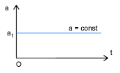
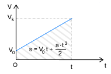
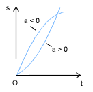
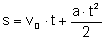 - jest to równanie drogi w ruchu jednostajnie przyspieszonym.
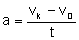 - przyspieszenie
Oba te wzory noszą nazwę kinematycznych równań ruchu jednostajnie przyspieszonego.
Dla opóźnienia (mówimy o nim wówczas kiedy prędkość maleje) przyspieszenie przyjmuje wartości ujemne.
Ruch "jednostajny" po okręgu
Na początek małe wyjaśnienie. Wiemy, że wektor prędkości jest zawsze styczny do toru ruchu. W każdej więc chwili wektor ten się zmienia. Mówimy jednak że ten ruch jest "jednostajny" gdyż mamy na myśli wartość (długość) tego wektora.
Ruchem "jednostajnym" po okręgu nazywamy więc taki ruch, którego torem jest okrąg a szybkość liniowa jest wielkością stałą.
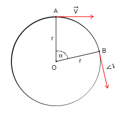
Czas potrzebny ciału na wykonanie pełnego obiegu nazywamy okresem i oznaczamy symbolem T. Wartość okresu możemy wyliczyć ze wzoru:
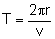
Liczbę pełnych obiegów w jednostce czasu nazywamy częstotliwością. Oznaczamy ją literą 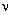 (grecka litera ni). Częstotliwość jest ściśle powiązana z okresem:
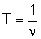
W literaturze można też spotkać oznaczenie częstotliwości przez literę f.
Prędkość liniową w ruchu jednostajnym po okręgu wyraża wzór:
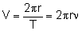
W tym ruchu pojawia się kolejny rodzaj prędkości. Jest nią prędkość kątowa i oznacza się ją symbolem ω:
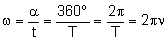
Zależność między prędkością liniową a prędkością kątową wyraża wzór:
Przyspieszenie dośrodkowe
Jak już wcześniej zostało napisane w każdej chwili wektor prędkości zmienia zwój kierunek. Musi zatem istnieć jakieś przyspieszenie które zmienia tą prędkość. Wartość tej prędkości (szybkość) nie ulega zmianie, więc przyspieszenie musi działać tak by zmienić kierunek, ale pozostawić wartość niezmienioną. Przyspieszenie dośrodkowe oznaczamy symbolem ar.
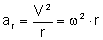
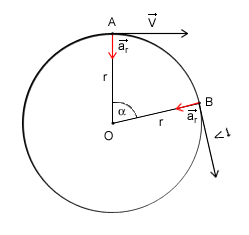
Spadek swobodny ciała
Dane: h, g

Spadek swobodny jest przykładem ruchu jednostajnie przyspieszonego prostoliniowego. Ciało to porusza się z przyśpieszeniem ziemskim. Wektor tego przyspieszenia jak i wektor prędkości ciała skierowana są pionowo w dół. W naszych rozważaniach pomijamy wszelkiego rodzaju opory ruchu.
Jeżeli mamy daną wysokość h, z której zaczyna spadać ciało (V0=0), to najczęściej zajmujemy się obliczeniem prędkości końcowej i czasu spadku ciała.
Wiemy, że w ruchu jednostajnie przyspieszonym drogę przebytą w czasie t obliczyć można ze wzoru:
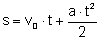
W tym przypadku mówimy o wysokości, więc zamiast oznaczenia s użyjemy symbolu h. Wiemy także, że ciało to zaczyna spadać, więc jego prędkość początkowa równa jest zero (V0=0). Przyspieszenie grawitacyjne oznaczamy zawsze symbolem g. Po poprawieniu nasz wzór będzie wyglądał następująco:
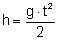
Z tego wzoru w prosty sposób wyliczyć można czas spadku ciała:
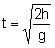
Jeżeli chcemy obliczyć prędkość końcową ciała, możemy skorzystać, ze wzoru na przyspieszenie:
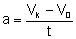
Podstawmy teraz za a symbol g, oraz za V0 wartość 0, otrzymamy:
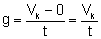
Do tego wzoru podstawmy za t:
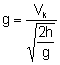
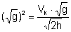
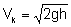 - i otrzymaliśmy gotowy wzór na obliczenie prędkości końcowej w spadku swobodnym.
Rzut pionowy do góry
Dane: V0, g
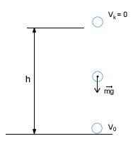
Ten rodzaj ruchu jest bardzo podobny do poprzedniego. Różnicą jest to, że prędkość końcowa równa jest zero, a wektor przyspieszenia grawitacyjnego ma przeciwny zwrot niż wektor prędkości. W związku z tym do obliczeń używać będziemy symbolu -g jako przyśpieszenia grawitacyjnego.
W tym ruchu przeważnie obliczamy czas wznoszenia i maksymalną wysokość. Czas możemy obliczyć ze wzoru:
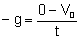
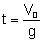 - jest to czas wznoszenia się ciała.
Podstawmy odpowiednie wartości do ogólnego wzoru na drogę w ruchu jednostajnie zmiennym, w celu wyprowadzenia wzoru na maksymalną wysokość ciała:
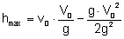
Stąd: 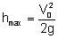
Można wykazać, że jeżeli prędkość końcowa w swobodnym spadku będzie równa prędkości początkowej w pionowym rzucie do góry, to czas spadku i czas wznoszenia się będzie równy, oraz maksymalna wysokość osiągnięta w tym rzucie będzie równa wysokości z której ciało spadało.
W spadku swobodnym używaliśmy wysokości do obliczenia czasu spadku i prędkości końcowej. W rucie pionowym wykorzystywaliśmy prędkość początkową do obliczenia wysokości i czasu wznoszenia się. Jeżeli jednak mamy inne dane np. maksymalną wysokość osiągniętą w rzucie pionowym, to do obliczenia prędkości początkowej wystarczy odpowiednio zmodyfikować te wzory.
Rzut pionowy do dołu
Dane: h, V0, g
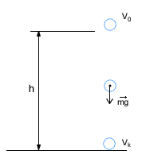
Jest to ruch jednostajnie przyspieszony prostoliniowy. Wyprowadzać będziemy, czas trwania ruchu, oraz prędkość końcową.
Wzór na drogę w ruchu jednostajnie zmiennym, możemy potraktować jako równanie drugiego stopnia, gdzie niewiadomą jest t:
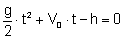
Następnie rozwiązując to równanie kwadratowe otrzymujemy dwa wyniki, z których wybieramy jeden, dodatni, bo jak wiadomo czas nie może mieć wartości ujemnych:
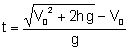
Obliczając prędkość końcową skorzystajmy z ogólnego wzoru na przyspieszenie:
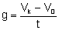
Pomnóżmy przez t i podstawmy z poprzednio wyliczonego wzoru:
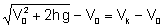
Ostatecznie: 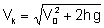
Rzut poziomy
Dane: V0, h, g
Ruch złożony jest nieco trudniejszy od poprzednich rodzajów. W rzucie poziomym mamy do czynienia ze złożeniem ruchu jednostajnego prostoliniowego i spadkiem swobodnym, czyli jednostajnie przyśpieszonego prostoliniowego. Zastanówmy się jakie są konsekwencje złożenia tych ruchów. Mimo iż te oba ruchy są prostoliniowe to jednak w rezultacie otrzymujemy ruch krzywoliniowy. Dlaczego? Otóż ruch prostoliniowy odbywa się w kierunku poziomym, a spadek swobodny w kierunku pionowym. Drugą konsekwencją jest czas odbywania się ruchu.
Analizując ten ruch będziemy badali drogę przebytą w określonym czasie w kierunku poziomym. Czasem trwania ruchu będzie czas spadku swobodnego.
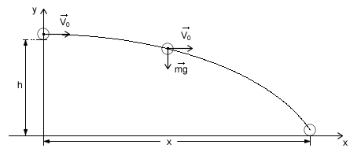
Wiemy, że czas w spadku swobodnym wynosi:
Zbadajmy jaką drogę przebędzie ciało w kierunku poziomym w tym czasie z prędkością V0. Skorzystamy ze wzoru na drogę w ruchu jednostajnym prostoliniowym: 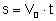 . Oznaczmy tę drogę symbolem X (pamiętamy, że rozpatrujemy kierunek poziomy - oś x w układzie współrzędnych).
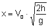
Ostatecznie: 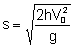
Rzut ukośny
Dane: V0, g, α
Rzut ukośny to złożenie ruchu jednostajnego prostoliniowego (ciało tym ruchem porusza się w kierunku poziomym), rzutu pionowego do góry, a po osiągnięciu wysokości maksymalnej spadku swobodnego ciała.
Na początku nadajemy ciału prędkość początkową V0 skierowaną pod kątem α względem poziomu. Następnie musimy rozłożyć wektor prędkości na składowe w kierunku pionowym i poziomym:
Z rysunku widać, że prędkość początkowa w kierunku poziomym (oznaczymy ją symbolem V0x) równa jest:
Natomiast prędkość początkowa w kierunku pionowym (V0y):
Celem rozważań jest obliczenie czasu ruchu oraz zasięgu.
Czasem ruchu będzie suma czasu rzutu pionowego do góry, oraz swobodnego spadku. Wiemy także, że czas swobodnego spadku i rzutu pionowego jest równy. Należy jeszcze pamiętać, że w rzucie pionowym do góry nasza prędkością początkową będzie V0y. Wiemy także, że czas swobodnego spadku i rzutu pionowego jest równy więc:
Zasięg już w prosty sposób obliczymy jak przy rzucie poziomym. Będzie to droga przebyta z prędkością V0x w czasie t:
Ostatecznie:
 |
Kinematyka - wersja do wydruku |